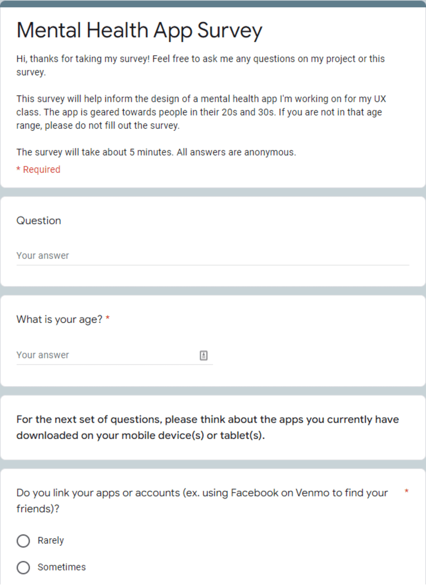
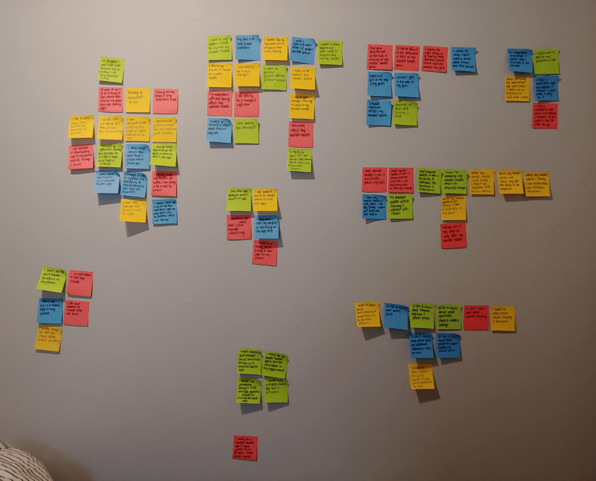
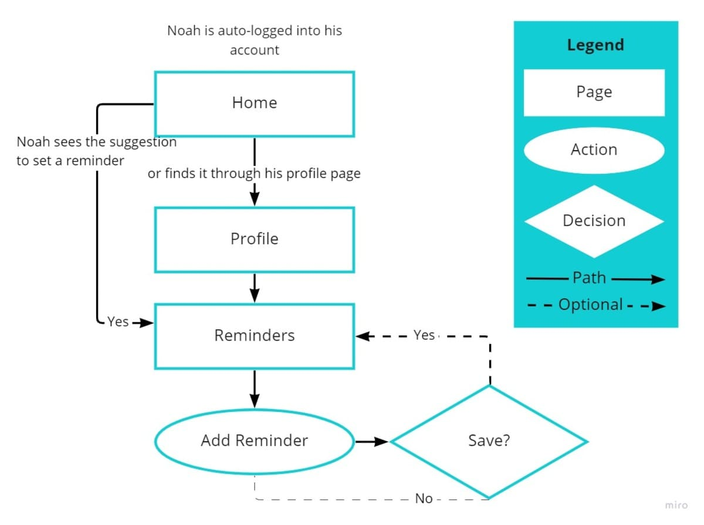
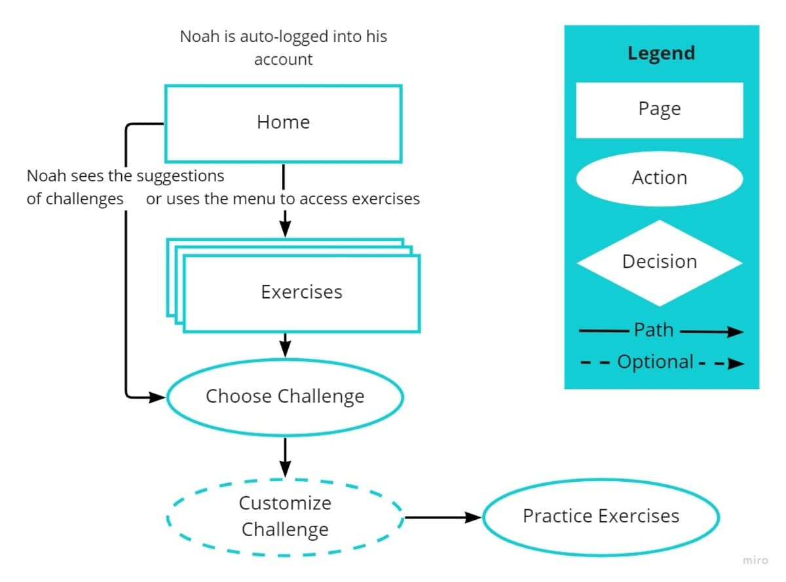
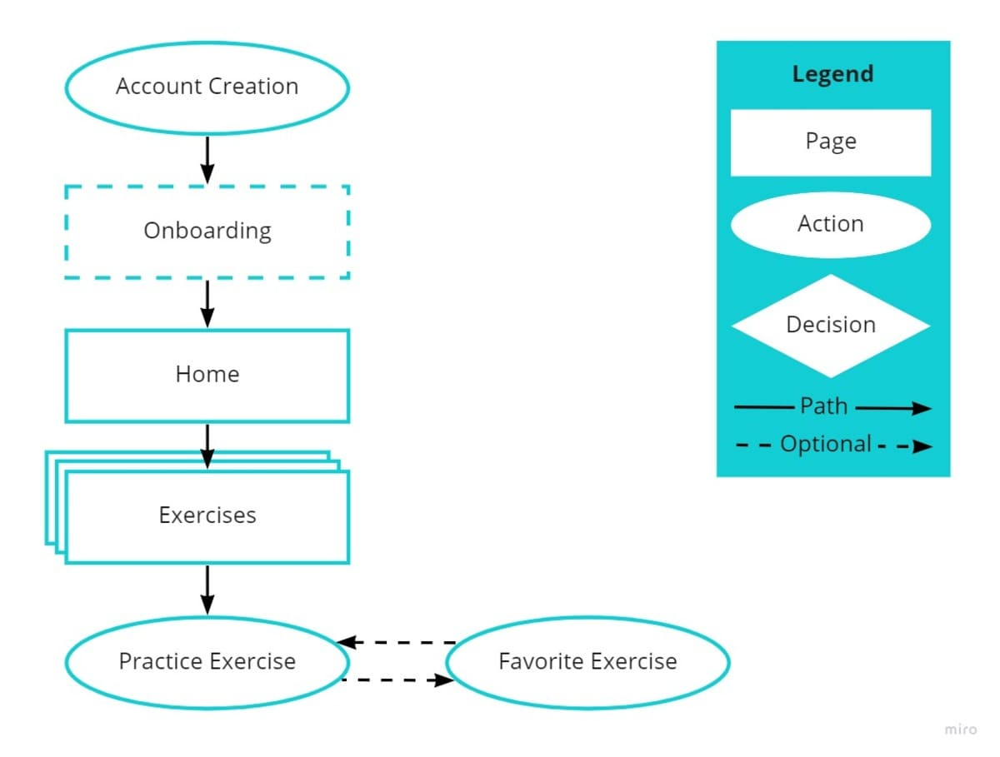
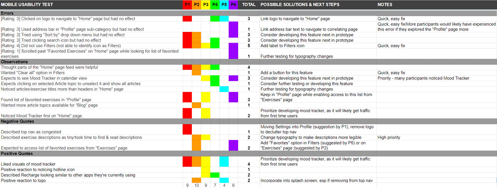
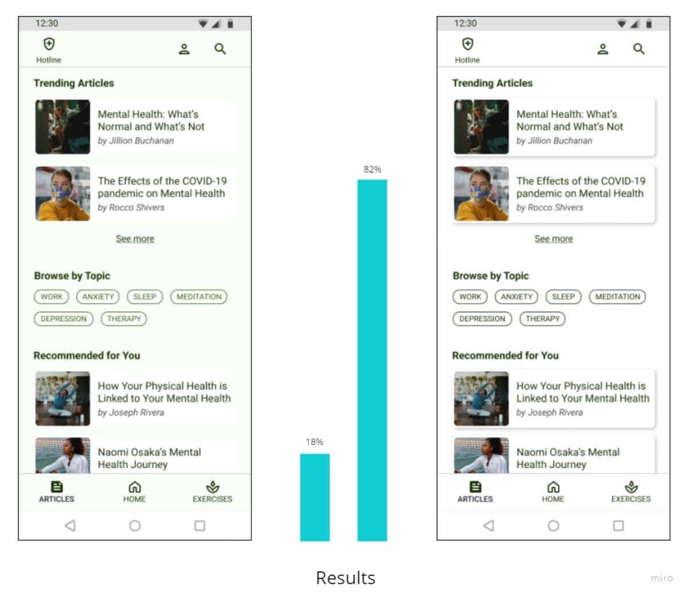
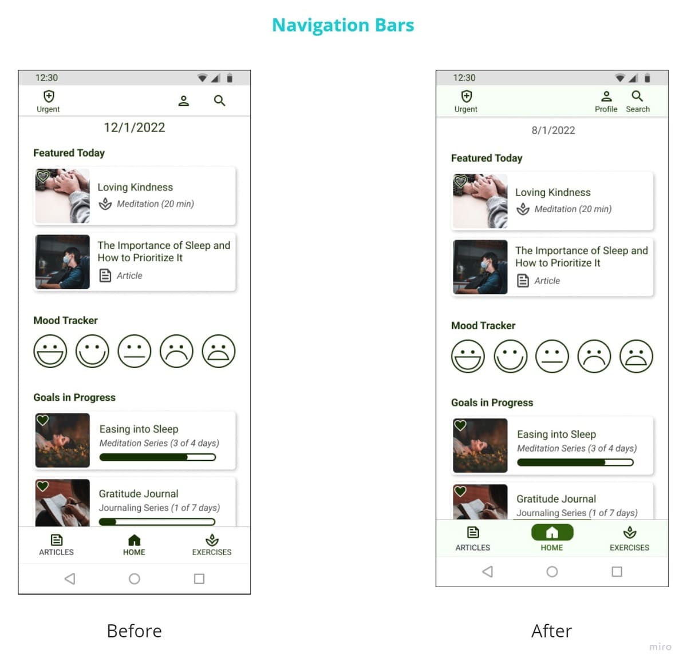
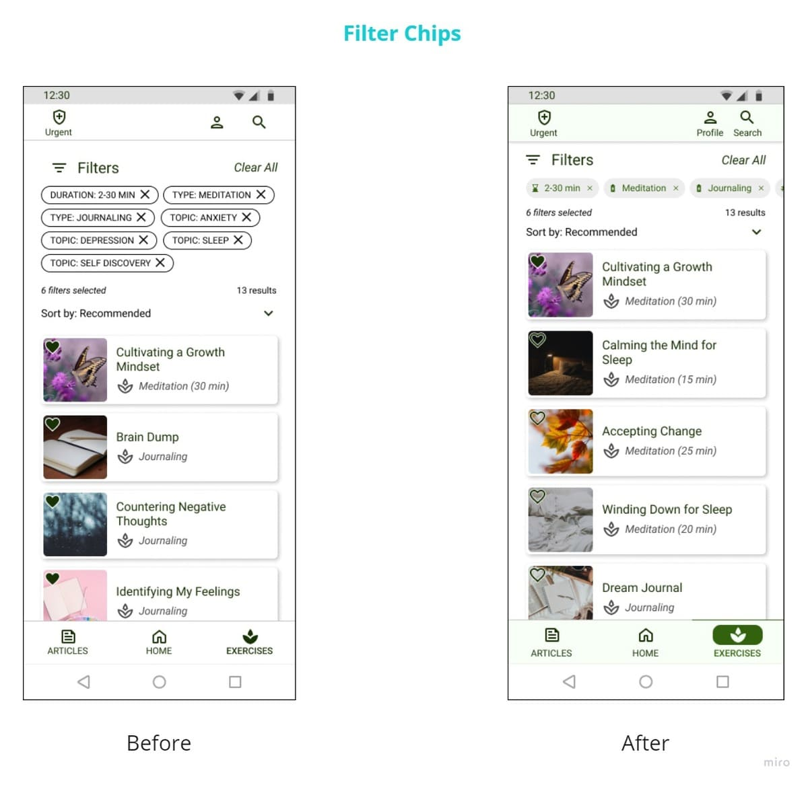

Objective: Design a responsive web app for people in their 20s and 30s to use on the go to better their mental health through exercises and education.
Background
Objective
Allow health-conscious individuals to log in to a responsive health and wellbeing portal to record their health and medical information, and access general physical and mental wellbeing features.
Basic App Feature Requirements
An onboarding page
A menu that allows users to navigate the application
A feature that allows users to store and log their medical and health information
An education and training feature that supports the users in learning more about health and wellness (consider resources, training, events, etc.)
As a part-time student/full-time professional, the main constraints for this projects were time & budget. I decided to tailor this app to health-conscious people in their 20s and 30s (a group that happens to overlap with my social circles) to
decrease the need for a research budget. As for the time constraint.. I didn't get my recommended 8-hours a night and made up for it with lots of coffee.
To validate and better understand users’ attitudes and current behaviors...
towards mental health
regarding privacy
of current apps for mental health
Surveys

Tool
Google Forms
Participants
22 people in their 20s and 30s
Key Insights
Mental health is very important to users but they can't dedicate enough time and resources to mental health. Therefore, I implemented practical and efficient ways of learning about and bettering mental health through exercises and
articles.
Users sometimes or rarely link apps/accounts or share location on phone apps. This tells me privacy is important to users and settings should be customizable to each user.
Most users currently don't regularly use apps geared towards improving mental health. So ways to form a new habit of using this app through reminders or a gamification habit would be useful.
Top 3 most useful features
tracking moods and activities to find correlations
tracking goals/reminders to work on goals
blog of studies about mental health
Interviews
Tool
Zoom, affinity mapping
Participants
4 people in their 20s and 30s
Key Insights
want efficient ways to work on mental health
see connections between mental and physical health
think privacy is important but implications vary
need ways to track a variety of types of mental health goals, activities and progress
interested in learning about a variety of mental health topics

Interview results analyzed with affinity mapping
User Personas
Noah
Noah has been seeing a therapist regularly for a year. He’s seen progress in his mental health when he’s able to practice different strategies but finds it difficult to do this regularly, especially dealing with anxiety and depression.
Age: 33
Family status: Single
Work: Customer Service Rep (full-time)
Technology: 50% Desktop / 50% Mobile
“I’ve learned some tools from my therapist but I need to put them into practice.”
Needs & Goals
Consistently using mental health tools “in real time”
Frustrations
Doesn’t always put mental health tools to use
Found mental health apps overwhelming in the past
Motivations
Address anxiety and depression symptoms
Improve relationships with others
Sam
Age: 27
Family status: Single
Work: Accountant (full-time)
Technology: 10% Desktop / 90% Mobile
“I know I should prioritize my mental health but I’m not sure where to start.”
Needs & Goals
Discovering new mental health practices
Quickly trying and saving mental health practices to revisit
Frustrations
Busy schedule with little free time
Doesn’t know where to start
Motivations
Coping with stressful work conditions
Avoid more serious mental health conditions
Sam has a demanding job that keeps her busy. She considers herself generally health conscious - she exercises regularly and watches what she eats. She’d like to find ways to work on her mental health as well.
User Flows

Noah (Primary Persona)
“I’ve learned some tools from my therapist but I need to put them into practice.”
Scenario: As someone who struggles with consistency, I want to set reminders so that I receive notifications to use the Recharge app.
Noah (Primary Persona)
“I’ve learned some tools from my therapist but I need to put them into practice.”
Scenario: As a person struggling with mental health, I want to practice mental health exercises as a part of an on-going goal so that I can build a long-term habit of practicing mental health exercises.


Sam(Secondary Persona)
“I know I should prioritize my mental health but I’m not sure where to start.”
Scenario: As a busy health-conscious person, I want to favorite a mental health exercise so that I can note it for future reference.
User Stories
As a Recharge app user, I want to...
Onboarding
learn how to use the app so that I can start tracking my mood and activities
log in or sign up so that my information syncs across devices
Mental Health Articles
read blog articles on mental health to receive mental health information from a reputable source
read blog articles on utilizing the app to use the app more effectively and efficiently
Mental Health Exercises
access a library of mental health exercises to discover and practice the exercises
use a search bar to quickly find mental health exercises that are pertinent to me
access a library of goals to build a habit of practicing mental health exercises
favorite mental health exercises to note them for future reference
set reminder(s) to create good mental health habits
Home
access my information to review my information and make necessary changes
access my profile to personalize the app
access emergency hotlines based on my location so that I can reach out for help when I need it
see my activity history to reference recent exercises and view my progress
navigate the app through a menu so that I can easily access all of the features I find valuable in the app
The overall goal of this study is to test the learnability and possible errors of the mobile version of the app’s main features. I will observe and measure if users understand the purpose/value of the app, its navigation and how to complete
the main functions.
Test Objectives
What are participants’ reactions to the concept of the app?
Do participants see value in the features of the app?
Are participants able to successfully browse and read a blog article?
Are participants able to successfully locate and practice an exercise?
Do participants make errors? Are participants able to correct errors?
Methodology
preferred method: in-person
remote method employed when necessary due to time and cost restraints.
Sessions
individually engage in 10-15 minute usability test sessions
30 minutes will be set aside for each session for the tester in anticipation of possible questions about the study, technical issues, participants running late, etc.

High-fidelity Prototype
Iterations

Preference Test
Around this time, I received some feedback about the background color from my tutor and peers, I ran a preference test to validate this feedback.
With overwhelmingly clear results, I updated my prototype. I'm glad to have had the preference test results in hand - updating every page took much longer than expected and I may have given up halfway if I had not seen the data to
prove this was absolutely the right choice.
Navigation Bars
Create uniform look on the top navigation bar by labeling all icons
Add more emphasis on selected state on bottom navigation
Add color to navigation bars to improve visuals


Filter Chips
Improve visuals by adding icons and colors
Declutter area above exercise results through the use of horizontal scroll
Journaling
Reduce cognitive load by dividing journaling prompts to multiple pages
Add color to text field to differentiate from prompt